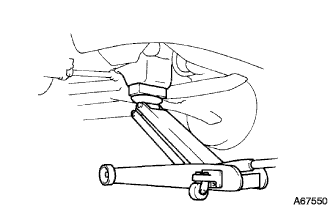

Engine mounting insulator SUB-ASSY RH (1NZ-FE (4WD)) Remove |
| 1. The engine Anda cover RH is removed |
Remove two bolts and two screws.
Remove the nut and remove the engine and cover RH.
| 2. The engine mounting insulator SUB-ASSY RH is removed |
|  |
Support the engine with a jack via a piece of wood.
 |
Remove 5 bolts and nuts and remove the engine mounting insulator RH.